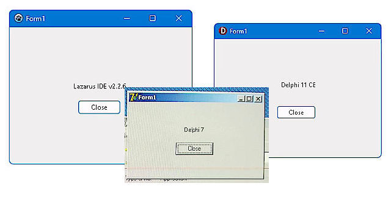
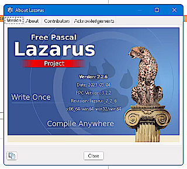
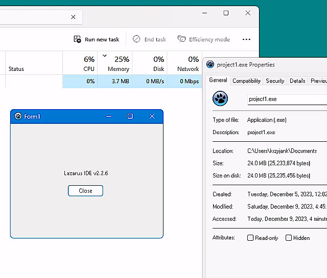
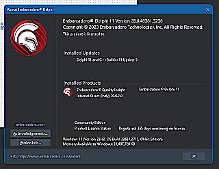
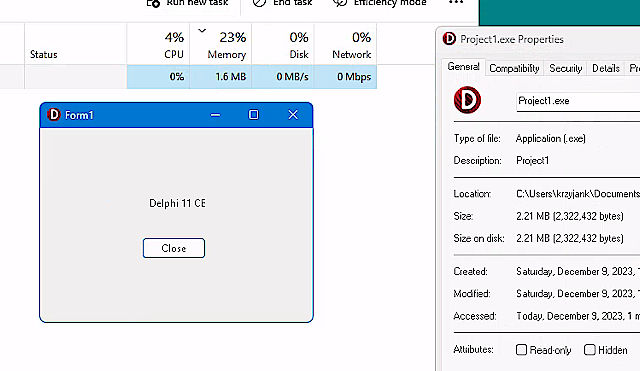
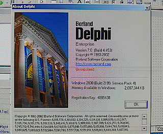
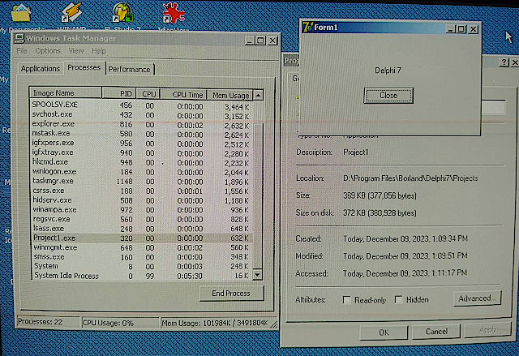

A simple test for a simple question.
I wanted to check how a simple program made in different versions (and flavors) of Delphi RAD software performs.
The program is just a default Form, one label, and a button. Clicking the button closes application.


The IDE is OK but it's not user-frendly. It's slow. And I constalnty hit some misterious errors. I was the problem but still. Did not like it.


Latest free version of Delphi. I need to say that developers made an excelent job of keeping the IDE close to the original. I instantly know what to click and every menu was there. It's fast as usual and very user-frendly. I like it a lot. I think this will be my current environment to work in.


The classic. It's super fast. Generated most sane sizes for such simple application. For my demoscene needs this is the perfect combination of performance and ease of use. Clear winner!
